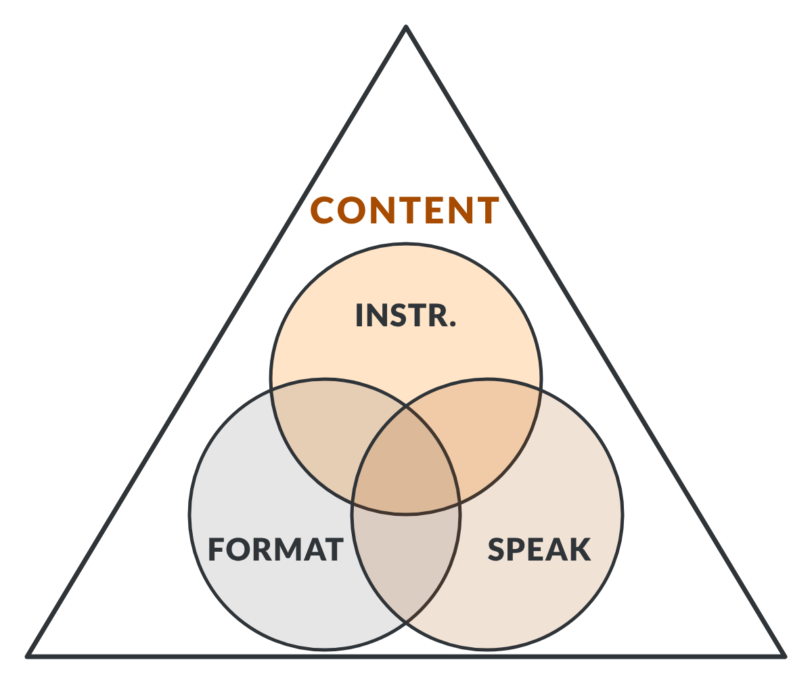

CE 205: PROFESSIONAL DEVELOPMENT I · AI TRAINING HUB · MODULE 2
Slides or a poster: content that fits the assignment, the format, and what you say.
How to move around. Use the step numbers to jump to any step, in any order. Previous Step and Next Step are at the bottom of every step, and Return to Overview is at the top. Scroll inside the panel to read.
START HERE
This module builds on Module 1: you already know how to write, test, and improve an agent. Here you build one that turns your written assignment into presentation content, for slides or a poster, that fits three things at once. Start with the video in Step 01.
MODULE MAP: SELECT ANY STEP
STEP 01 OF 3UNDERSTAND
In CE 205, presentation content has to work three ways at once: it meets the assignment’s instructions, fits the format (slides or a poster), and supports what you speak. Content that misses one circle is not finished.
WHAT YOU NEED TO DO

The CE 205 model for presentation content, from Dr. Retherford’s class sketch.
INSTR.
INSTRUCTIONS
The assignment sheet and its rubric. Check: is every required element there, and is every rule met?
FORMAT
SLIDES OR A POSTER
The medium the assignment asks for. Check: does the content fit this medium?
SPEAK
SPEAKER NOTES AND DELIVERY
What you say. Check: can you say it, within the time limit, from the same content?
WATCH THE WALKTHROUGH
WALKTHROUGH VIDEOContent That Fits Three Ways2:02
Narration
In CE 205, presentation content has to do three jobs at once. Here is the model for it.
The triangle is your content: everything on your slides or poster, and everything you say about it. Inside it are three circles. Let's zoom into each one.
INSTR. is short for instructions: the assignment sheet and its rubric. Its purpose is credit. Content counts only when it covers every required element and follows every rule. So the check is simple: is each requirement visibly there?
FORMAT is the medium: slides or a poster. The same content takes a different shape in each. Slides show one idea at a time, in the order you choose. A poster shows everything at once, and it has to stand on its own. The check: does this content work in this format?
SPEAK is what you say: your speaker notes and your delivery. Its purpose is a talk that matches what the audience sees. Build the notes from the same content, keep them to short prompts, and fit them to the time limit. The check: can you say it, in time, from the same content?
One circle is not enough. Content that meets the rubric but crowds the poster, or reads well but cannot be said in time, still needs work. Aim for the centre, where all three overlap.
Your agent should work the same way. Give it your written assignment, and the presentation's instructions and rubric. It asks one question first: slides or a poster? Then it drafts the content and the speaker notes together, and checks all three circles.
For Presentation 02, the instructions call for a digital poster. So the checks become: every required element visible on the poster, a poster that stands on its own, and an elevator speech of 2 to 3 minutes, built from the same content.
Build an agent that aims for the centre.
Visual walkthrough
STEP 02 OF 3BUILD
Use what you learned in Module 1. Your agent reads your written assignment and the presentation’s instructions, asks whether the content is for slides or a poster, then drafts the content and the speaker notes together and checks all three circles.
WHAT YOU NEED TO DO
No template to copy: as in Module 1, writing the instructions yourself is the point.
DEEP DIVE
| Slides | Poster | |
|---|---|---|
| Space | One idea at a time, in the order you choose | One page; every required area visible at once |
| Text | Short phrases under an informative title | A balance of text and graphics |
| Without you | Supported by your talk | Must stand on its own |
| Speaking | Notes for each slide | One talk that walks through the poster |
Dr. Retherford’s sample poster, Technical Presentations: Strategies for Success, recommends one tool: “Speaker notes should be generated independently from the visual complement to the presentation.” Its notes use three colors:
You can ask your agent to format its speaker notes the same way.
STEP 03 OF 3APPLY
Presentation 02 is a round-table discussion with a digital poster. Give your agent your WA01 and WA02 papers and the Presentation 02 instructions and rubric, then check its content against all three circles before you design the poster yourself.
WHAT YOU NEED TO DO
INSTR.
WHAT THE POSTER MUST DO
FORMAT
A DIGITAL POSTER
SPEAK
A ROUND-TABLE DISCUSSION
Rate each item yourself: Satisfied or Needs improvement.
| The poster and talk… | Circle | Your rating |
|---|---|---|
| Show every required element, worked into the design rather than listed | INSTR. + FORMAT | |
| Make sense without you speaking | FORMAT | |
| Explain the failure with a graphic, not only words | FORMAT | |
| Fit your elevator speech into 2 to 3 minutes | SPEAK | |
| Match: everything you say is on the poster or in your papers | SPEAK + INSTR. | |
| Contain no invented facts, sources, or images | All three |
DEEP DIVE
| Rubric criterion | Points |
|---|---|
| Rules and Requirements (all criteria must be satisfied) | 3 |
| Technical Vocabulary | 1 |
| Technical Aspects | 0.5 |
| Appropriate Explanation, Focus, and Level of Detail | 0.5 |
| Integrated/Cohesive, Good Conclusion | 0.5 |
| Lessons | 1 |
| Professional Work | 1.5 |
| Peer Review | 1 |
| Peer Question | 1 |
| Total | 10 |
For this module’s activities you may use AI to draft and check content, and upload course documents and your own papers to UT AI Hub, within university and course data rules. Disclose your AI use as the course requires.
CE 205 · Civil and Environmental Engineering · University of Tennessee, Knoxville